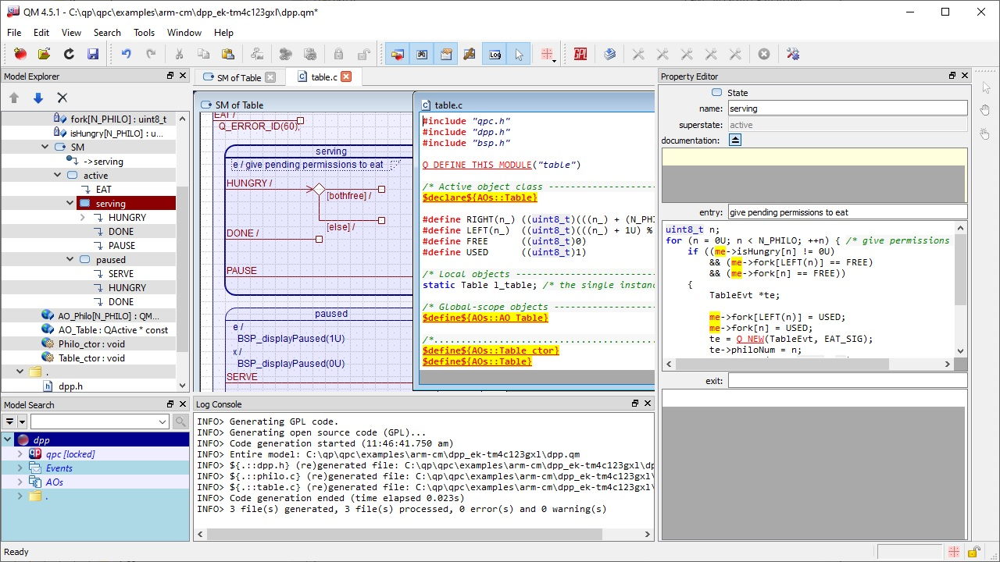
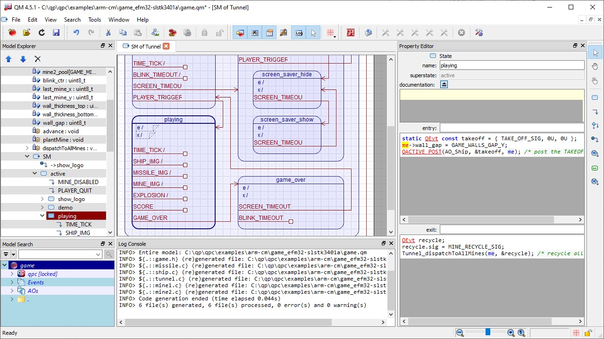
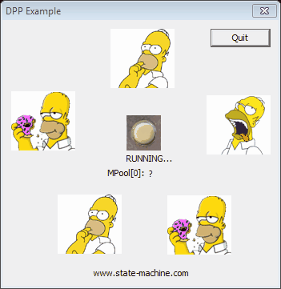
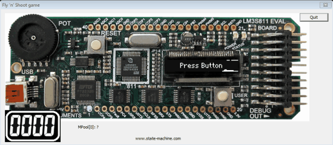
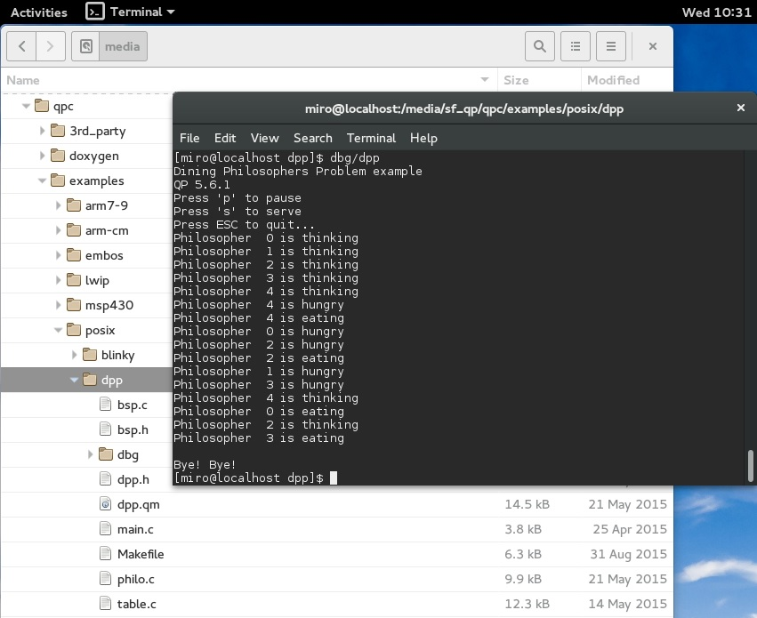
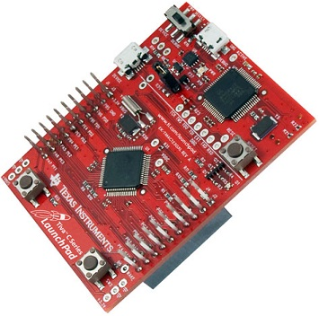
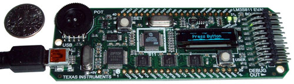

QM™ TutorialUser Interface
QM™ model examples and projects for ARM Cortex-M, POSIX (Linux, Embedded Linux), and Windows (including QWIN GUI Kit for Prototyping Embedded Systems on Windows) are included in the QP™ Baseline Distributions available for download from SourceForge.net.
Specifically:
Finding the QM™ Examples in the QP™ Distribution
The following directory chart shows QM™ example models and projects in the QP/C Baseline Distribution. The QP/C++ and QP-nano Baseline Distributions have a similar structure.
- Note
- The QM model files have the extension .qm. After installing QM, you can open the models in QM by double-clicking on the
.qm files in Windows Explorer.
<qp>/
+-examples/
| +-workstation/
| | +-blinky/
| | | +-blinky.qm
| | | +-~~~
| | +-calc/
| | | +-calc.qm
| | | +-~~~
| | +-calc1/
| | | +-calc1.qm
| | | +-~~~
| | +-calc1_sub/
| | | +-calc1_sub.qm
| | | +-~~~
| | +-comp/
| | | +-comp.qm
| | | +-~~~
| | +-dpp/
| | | +-dpp.qm
| | | +-~~~
| | +-dpp-comp/
| | | +-dpp.qm
| | | +-~~~
| | +-dpp-gui/
| | |
| | +-game-gui/
| | |
| | +-history_qhsm/
| | | +-history.qm
| | | +-~~~
| | +-history_qmsm/
| | | +-history.qm
| | | +-~~~
| | +-~~~
| | +-qhsmtst/
| | | +-qhsmtst.qm
| | | +-~~~
| | +-qmsmtst/
| | | +-qmsmtst.qm
| | | +-~~~
| |
| +-arm-cm/
| | +-blinky_ek-tm4c123gxl/
| | | +-qk/
| | | | +-arm/
| | | | | +-dbg/
| | | | | | +-blinky-qk.axf
| | | | | | +-blinky-qk.bin
| | | | | +-~~~
| | | | | +-blinky-qk.uvprojx
| | | | | +~~~
| | | | +-gnu/
| | | | | +-dbg/
| | | | | | +-blinky-qk.elf
| | | | | | +-blinky-qk.bin
| | | | | +-~~~
| | | | | +-Makefile
| | | | | +~~~
| | | | +-iar/
| | | | | +-dbg/
| | | | | | +-blinky-qk.bin
| | | | | +-~~~
| | | | | +-blinky-qk.ewp
| | | | | +-blinky-qk.eww
| | | | | +-~~~
| | | +-qv/
| | | | +-arm/
| | | | | +-dbg/
| | | | | | +-blinky-qv.axf
| | | | | | +-blinky-qv.bin
| | | | | +-~~~
| | | | | +-blinky-qv.uvprojx
| | | | | +~~~
| | | | +-gnu/
| | | | | +-dbg/
| | | | | | +-blinky-qv.elf
| | | | | | +-blinky-qv.bin
| | | | | +-~~~
| | | | | +-Makefile
| | | | | +~~~
| | | | +-iar/
| | | | | +-dbg/
| | | | | | +-blinky-qv.bin
| | | | | +-~~~
| | | | | +-blinky-qv.ewp
| | | | | +-blinky-qv.eww
| | | | | +-~~~
| | | +-win32/
| | | | +-dbg/
| | | | +-blinky.exe
| | | | +-Debug/
| | | | | +-blinky.exe
| | | | +-~~~
| | | | +-Makefile
| | | | +-dpp_gui.sln
| | | | +-dpp_gui.vcxproj
| | | | +-~~~
| | | +-win32-qv/
| | | | +-~~~
| | | | |
| | +-dpp-qk_ek-tm4c123gxl/
| | | +-qk/
| | | | +-arm/
| | | | | +-~~~
| | | | | +-dpp-qk.uvprojx
| | | | | +~~~
| | | | +-gnu/
| | | | | +-~~~
| | | | | +-Makefile
| | | | | +~~~
| | | | +-iar/
| | | | | +-dpp-qk.ewp
| | | | | +-dpp-qk.eww
| | | | | +-~~~
| | | +-qv/
| | | | +-arm/
| | | | | +-~~~
| | | | | +-dpp-qv.uvprojx
| | | | | +~~~
| | | | +-gnu/
| | | | | +-~~~
| | | | | +-Makefile
| | | | | +~~~
| | | | +-iar/
| | | | | +-dpp-qv.ewp
| | | | | +-dpp-qv.eww
| | | | | +-~~~
| | | +-win32-gui/
| | | | +-dbg/
| | | | +-dpp.exe
| | | | +-Debug/
| | | | | +-dpp.exe
| | | | +-~~~
| | | | +-Makefile
| | | | +-dpp_gui.sln
| | | | +-dpp_gui.vcxproj
| | | | +-~~~
| | | +-dpp.qm
| | | +-~~~
| | +-game_efm32-slstk3401a/
| | | +-qk/
| | | | +-arm/
| | | | +-gnu/
| | | | +-iar/
| | | +-qv/
| | | | +-arm/
| | | | +-gnu/
| | | | +-iar/
| | | +-win32-gui/
| | | | +-~~~
| | | +-game.qm
Example Models
Most QP™ example application contain the QM™ models (.qm) that you can open in the QM™ tool to explore, and modify. For example, the following screen shot shows the model game.qm opened in QM.
Dining Philosophers Problem (DPP) Example
The Dining Philosophers Problem (DPP) application is used in most QP™ examples for various processors and operating systems. This example application is described in the Application Note "Dining Philosophers Problem (DPP) Example".

Dining Philosophers Problem (DPP) model
"Fly 'n' Shoot" Game Example
The "Fly 'n' Shoot" game example demonstrates several state machines (active objects) executing concurrently to realize a simple game. This example application is described in @webref{doc/PSiCC2.pdf,Chapter 1 of the Practical UML Statecharts in C/C++, 2nd Ed. book}, which is available online in the book excerpts.

Fly 'n' Shoot game model
Running the Examples
All provided QM™ examples contain pre-built executables/images that you can immediately execute (on Windows/Linux) or download to the target board (EK-TM4C123GXL or EK-LM3S811 boards).
Windows
The examples for Windows come in two flavors: simple console applications and GUI simulations of an embedded board. Both types can be run by double-clicking on the executable (e.g., dpp.exe or game-gui.exe). You interact with the console applications by typing on your keyboard, where the legend of the recognized keys is displayed at the beginning of the run. The GUI simulations respond to mouse clicks and keyboard as described in the App Notes for the example applications.


Linux
The examples for Linux are provided as simple console applications. You run them from the terminal window, typing the name of the program. You interact with the console applications by typing on your keyboard, where the legend of the recognized keys is displayed at the beginning of the run.

DPP example in a Linux terminal
EK-TM4C123GXL and EK-LM3S811 (ARM Cortex-M)
The examples for the EK-TM4C123GXL and EK-LM3S811 boards are provided for the ARM-KEIL MDK, GNU-ARM (Sourcery CodeBench), and IAR EWARM toolsets. Free evaluation versions of all these toolsets are available for download from the respective websites. Pre-compiled images for flash download are provided in all example projects.


Rebuilding the Examples
In order to rebuild the examples from source code you need to:
- Install the baseline code of the QP framework type you want to use.
- Install the ARM development toolset you want to use (ARM-KEL, GNU-ARM, or IAR).
- Define an environment variable to point to the location of the QP baseline code (
QPC for QP/C, QPCPP for QP/C++, and QPN for QP-nano).
For example, if you want to rebuild a QP/C example project, you need to download and install the QP/C baseline code and you need to define the environment variable QPC. Assuming that you have installed QP/C into the directory C:\qp\qpc, you should define the environment variable QPC to C:\qp\qpc.
QM™ TutorialUser Interface